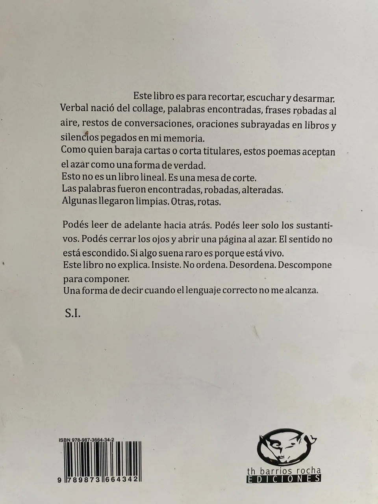

Verbal
Verbal es mi primer libro de poesía, una obra que nace de la necesidad de ponerle palabras a aquello que durante años intenté contar a través de las imágenes. Si en No Verbal (2016) la fotografía fue mi manera de interrogar al mundo, en Verbal la palabra aparece como otro territorio de exploración, tan íntimo como político.
Es un libro atravesado por la memoria, el deseo, los vínculos, las contradicciones y las múltiples formas de habitar un cuerpo y una época. La escritura no busca respuestas definitivas, sino abrir preguntas, incomodar los silencios y hacer visible aquello que muchas veces permanece en los márgenes.
Publicado en una primera edición independiente de 62 ejemplares, Verbal fue presentado el 16 de abril de 2026 en el espacio cultural Vicente Cidade, en Posadas, Misiones.
Entre la fotografía y la poesía construyo una misma búsqueda: registrar lo que sucede, lo que desaparece y lo que insiste en permanecer. Porque hay cosas que una fotografía no alcanza a decir y palabras que, inevitablemente, terminan convirtiéndose en imágenes.
Este libro es para recortar, escuchar y desarmar.
Verbal nació del collage, palabras encontradas, frases robadas al aire, restos de conversaciones, oraciones subrayadas en libros y silencios pegados en mi memoria.
Como quien baraja cartas o corta titulares, estos poemas aceptan el azar como una forma de verdad.
Esto no es un libro lineal. Es una mesa de corte.
Las palabras fueron encontradas, robadas, alteradas. Algunas llegaron limpias. Otras, rotas.
Podés leer de adelante hacia atrás. Podés leer solo los sustantivos. Podés cerrar los ojos y abrir una página al azar. El sentido no está escondido. Si algo suena raro es porque está vivo.
Este libro no explica. Insiste. No ordena. Desordena. Descompone para componer.
Una forma de decir cuando el lenguaje correcto no me alcanza.
- Editorial
- Th Barrios Rocha Ediciones
- Edición
- Primera edición. Eldorado, Misiones, febrero de 2026
- Formato
- 52 páginas. 21 x 15 cm
- Tirada
- Primera edición de 50 ejemplares y una reedición de 12
- ISBN
- 978-987-3664-34-2


Libros
Seguir recorriendo